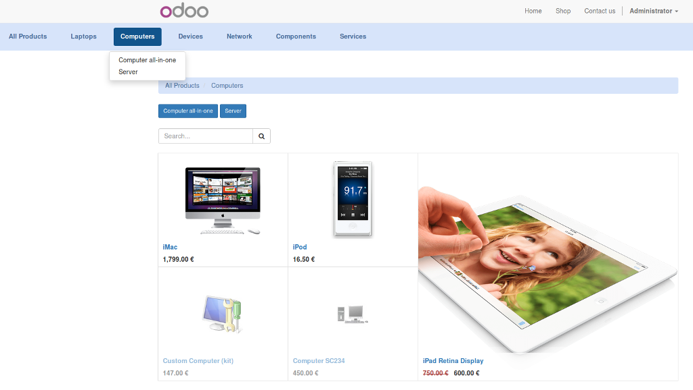

Now you can choose to use the new horizontal menu, or the vertical menu. Horizontal menu it's activated by default.

Customization
By using the horizontal menu, you can set the products grid and products pager to fit all available width. These options are activated by default, you should deactivate them to vertical menu use.
Vertical Menu
You can activate it on the customization menu. You may to deactive products navigator and products grid full width.
Subcategories buttons
For multiple levels of subcategories, you can easily navigate trought them by using buttons
You'll always know where you are!
With the navigation bar you will know perfectly what category you're in. You can use it to navigate backwards in categories
Mobile devices compatible
Fixed and collapsible categories are uncomfortable in mobile devices. Menu pills are compact and usefull.